Engine A is a subtractive synthesizer with a twist. Like a classic analogue-style instrument it starts from a bright waveform — saw, square, pulse, triangle, sine or a noise cycle — and shapes it with a filter, envelopes and an LFO. The twist is the filter: instead of cutting frequencies it cuts scales. Every waveform cycle is broken down by a wavelet transform into 2047 small building blocks, the atoms, arranged in 11 octave bands. The SCALE FILTER turns those bands up and down, SPARSITY throws away all but the most important atoms, and the POSITION window can confine the filter to one part of the cycle — only the falling edge of a square, say — leaving the rest untouched. The WAVELET you choose sets the shape of the atoms and therefore the character of every sweep: blocky and digital with Haar, smooth and analogue-like with Daubechies 20.
A classic synthesizer thinks in partials. A sawtooth is a stack of sine-wave harmonics at 1, 2, 3, 4 … times the note frequency, each quieter than the one before, and a low-pass filter turns down the harmonics above its cutoff. Every harmonic lasts for the whole cycle, so this description says how much of each frequency there is — but nothing about where in the waveform it happens. The saw’s sharp reset and its smooth ramp are mixed into the same partials.
A wavelet transform describes the same cycle with atoms: short wiggles that all have the same shape — the wavelet — and come in sizes an octave apart. The largest atom spans the whole cycle; the next size has two atoms, each half a cycle long; then four, eight … down to 1024 tiny atoms spaced two samples apart. All atoms of one size form a band. Because each atom sits at a definite place in the cycle, the transform tells you both which octave and when.
Figure 1. Left: in the Fourier view each harmonic spans the whole cycle. Right: the 11 bands of one cycle (B1 at the bottom, B11 at the top), shaded by the atoms of a SAW analysed with Daubechies 4. The panel’s SCALOGRAM draws the same picture live.
One cycle = 2048 samples = 2047 atoms (1 + 2 + 4 + … + 1024) plus the average, which is removed.
Band b has 2b−1 atoms. Band 1 is about the fundamental, band 2 the 2nd harmonic, band 3 harmonics 3–4, band 4 harmonics 5–8 … each band is about one octave of harmonics.
Smooth stretches of a wave need almost no fine atoms; sharp edges need many. That is why only the reset edge of the saw lights up the fine rows in Figure 1 — and why the POSITION window can treat edges separately.
Engine A analyses your source wave once, splits it into 11 band layers — the part of the wave carried by each band — and plays them back together, each multiplied by its own gain. Setting those gains is the job of the SCALE FILTER.
Where the bands are
The cycle is analysed once and played back at the pitch of each note (it is pitch-synchronous), so the bands are relative to the note: band 4 is always about harmonics 5–8, whatever key you press. Key tracking is built in. In hertz, the bands move with the note:
Band
Atoms
Harmonics (≈)
At C2 (65 Hz)
At C4 (262 Hz)
At C6 (1047 Hz)
B1
1
1
65 Hz
262 Hz
1.05 kHz
B2
2
2
131 Hz
523 Hz
2.09 kHz
B3
4
3–4
196–262 Hz
785 Hz – 1.05 kHz
3.14–4.19 kHz
B4
8
5–8
327–523 Hz
1.31–2.09 kHz
5.23–8.37 kHz
B5
16
9–16
589 Hz – 1.05 kHz
2.35–4.19 kHz
9.42–16.7 kHz
B6
32
17–32
1.11–2.09 kHz
4.45–8.37 kHz
—
B7
64
33–64
2.16–4.19 kHz
8.63–16.7 kHz
—
B8
128
65–128
4.25–8.37 kHz
—
—
B9
256
129–256
8.44–16.7 kHz
—
—
B10
512
257–512
—
—
—
B11
1024
513–1024
—
—
—
“—” = not played at that pitch (see below). Values are for the smooth wavelets; Haar and the short Daubechies bands overlap more with their neighbours.
To keep high notes free of aliasing, each band layer is stored in eleven band-limited versions, one per octave, and every note uses the version whose harmonics stay below the sample rate minus 19 kHz (about 25 kHz at 44.1 kHz, 29 kHz at 48 kHz) — anything that folds back lands above 19 kHz. The consequence is musical: the finest bands only exist on low notes. Every octave down adds one band. At 48 kHz, band 7 is the highest band played for notes from about A♯3 to A4, band 8 an octave lower, band 9 two octaves lower; band 10 needs notes below about 57 Hz and band 11 below 28 Hz. (At 44.1 kHz the limits are about a whole tone lower.)
TIP
At middle C, CUTOFF values between 8 and 12 all sound the same with KEY TRK at 100 %: there is nothing above band 7 to remove. Do your fine-band sweeps on low notes, or keep the cutoff below 7.
The wavelet chooses the atom
The WAVELET selector (shared by both engines) decides what the atoms look like. Seven classic wavelets are available, from the 2-tap Haar step to the 40-tap Daubechies 20:
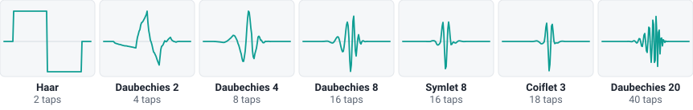
Figure 2. One atom of each wavelet, as drawn by the ATOM SHAPE display. “Taps” is the length of the wavelet filter.
Wavelet
Taps
Character
Haar
2
A square step up and down. Edges stay razor-sharp and every removed band halves the number of “steps” in the wave: digital, 8-bit, sample-and-hold character.
Daubechies 2
4
Short and lopsided. Asymmetric ringing next to edges; gritty and slightly metallic.
Daubechies 4
8
The default: a good all-rounder with mild, asymmetric ringing.
Daubechies 8
16
Longer and smoother; filter sweeps start to sound “analogue”.
Symlet 8
16
Same length as Daubechies 8 but almost symmetric: cleaner, more balanced edges.
Coiflet 3
18
Nearly symmetric and very smooth for its length.
Daubechies 20
40
Long and almost sine-like: each band is close to a pure octave of harmonics — the smoothest, most “Fourier-like” filtering.
The trade-off is the classic one between time and frequency. Short wavelets are precise in time — edges stay sharp and the POSITION window has crisp borders — but their bands overlap, so each band also contains some neighbouring octaves. Long wavelets separate the octaves cleanly but each atom is spread over more of the cycle. For subtractive sweeps that sound like a conventional filter, choose Daubechies 8 or longer; for stepped, digital colours choose Haar or Daubechies 2.
Signal flow
Figure 3. Engine A, from source wave to output. Teal boxes are the wavelet-specific stages.
Table building happens only when you change WAVE, WIDTH, SPARSITY or WAVELET: the source cycle is transformed, thinned out by SPARSITY, and split into 11 band layers plus a “dry” layer (their sum, i.e. the unfiltered wave). The switch to new tables is crossfaded, so you can change these controls while playing.
Every voice plays these layers at its own pitch and mixes them with the SCALE FILTER gains, which are recalculated continuously from CUTOFF, the envelopes, the LFO and velocity. The POSITION window then decides, point by point within the cycle, how much of the filtered sound replaces the dry one.
All voices are summed and pass through the saturation, delay and reverb, a DC blocker, the master volume and a soft limiter that keeps the output below 0 dBFS.
A BEAUTIFUL CONSEQUENCE
The square wave that will not filter
With the Haar wavelet, the band-1 atom is one cycle of a square wave: high for the first half, low for the second. So when you analyse a SQUARE with Haar, the whole cycle is described by exactly one atom — the other 2046 are zero. The SCALOGRAM shows it: only the bottom row lights up.
The low-pass filter therefore has nothing to remove. CUTOFF does nothing until it reaches band 1; below that the sound simply gets quieter. For progressive subtractive sweeps on a square, choose a smooth wavelet — Daubechies 8, Symlet 8 or Daubechies 20: their atoms do not match the square, so its edges spread over all bands and the filter has something to work on. Or use the effect on purpose: Haar + SQUARE is a tone no filter can dull. The same happens, almost, with PULSE at 25 % or 75 %: the edges fall on quarter-cycle boundaries and Haar needs only two atoms.
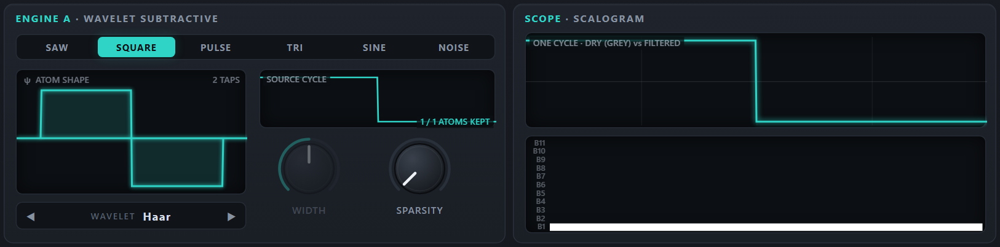
Haar + SQUARE: the SCALOGRAM shows a single atom, in band 1. Nothing above it to filter.
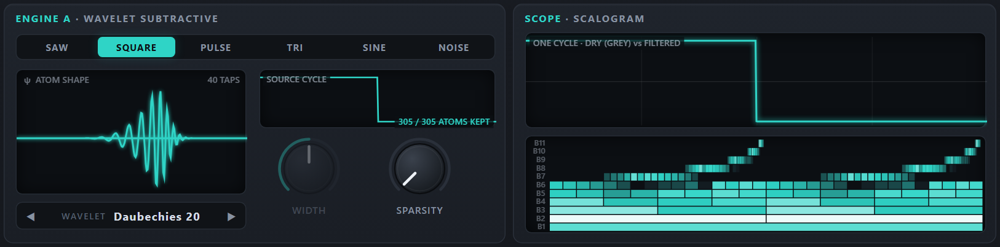
Daubechies 20 + SQUARE: atoms in every band, clustered at the two edges (0° and 180°). Now the filter has work to do.
2Quick start
From closed to sounding in five steps — pick the column for the version you use.
Web app BROWSER
Double-click web/index.html to open it in Chrome or Edge (Firefox also works; MIDI keyboards are best supported in Chrome and Edge). No installation and no web server are needed.
Click Click to start audio (browsers only allow sound after a click). The status bar turns green: Audio on · 48.0 kHz.
The app always opens on A · Warm Pad. In the header, click A · SUBTRACTIVE, then step to A · Init with the preset arrows ◀ ▶ (or click the preset name to pick from the list).
Play: click the on-screen keys (lower on a key = louder), press the digit keys 1 … 0 or the letter row ASDF …, or play a MIDI keyboard.
Hold a note and slowly turn CUTOFF down from 7 to 2. In the SCALOGRAM the rows switch off from the top as bands are removed. Then click ▶ next to the wavelet name and sweep again: same filter, different atoms.
Ableton Live VST3 / VST2
Copy the whole WaveletSynthesizer.vst3 folder into your VST3 folder (C:\Program Files\Common Files\VST3; vst\install.bat does it and asks for administrator rights) or into the VST2 plug-in folder you use in Live: the same folder works in both.
In Live open Preferences → Plug-ins, switch on Use VST3 Plug-in System Folders (VST3) or Use VST2 Plug-in Custom Folder (VST2) and click Rescan.
In Live’s browser open Plug-ins → OktoPierre → Wavelet Synthesizer and drag it onto a MIDI track. A new instance starts on A · Warm Pad.
Arm the track and play your MIDI keyboard, or press M to use Live’s Computer MIDI Keyboard.
Click A · SUBTRACTIVE in the plugin header, choose A · Init from the preset menu (click the preset name) and repeat step 5 of the web column.
The web app waits for a click before it may make sound. The VST3 plugin needs no such step.
TIP
Want to hear what the instrument can do first? Click ▶ DEMO next to the logo in the web app: a Beethoven sonata movement plays while the factory presets change every few seconds. The ▾ beside it opens more pieces — see Demo.
3Panel tour
The panel is the same in the web app and the plugin. In engine A mode the accent colour is teal and the upper-left section shows the ENGINE A controls. The screenshot shows the factory preset A · Edge Pluck; click a number to jump to its description.
22SUB OSC — LEVEL, OCT and SHAPE of the sub oscillator.
23Keyboard — five octaves; click lower on a key to play louder.
24Status bar (web app) — audio and MIDI status, key help, Save preset / Export / Import.
The header
▶ DEMO (web app only) plays the default demo, a piece during which the factory presets change every few seconds; the ▾ beside it opens the other demo pieces and lets you load your own MIDI file — see Demo.
A · SUBTRACTIVE / B · ADDITIVE switches the engine. Only the upper-left section and the accent colour change; the filter, position, envelopes, LFO, voice and effects are shared and keep their settings.
The preset browser shows the current preset; a dot after the name means it has been modified. See Browsing and saving presets.
MANUAL A and MANUAL B open the manuals — in the web app as an overlay (close it with ✕, Esc or a click outside; “Open in new tab” pops it out), in the plugin in your web browser.
The small knob at the right is the master VOLUME (−36 to +6 dB, default −3 dB), followed by the stereo output meter. In the plugin, a size button next to the logo opens a menu of window sizes (70–150 %).
Working with the controls
Gesture
Effect
Drag up / down
Changes the value. A full sweep takes about 180 pixels of mouse travel on a knob.
Shift + drag
Five times finer adjustment; you can press or release Shift during the drag.
Mouse wheel
Small steps of 1 % of the range (0.2 % with Shift). Stepped controls such as OCTAVE, VOICES, UNISON move one step.
Double-click, or Ctrl + click
Resets the control to its default value (⌘ + click on a Mac).
Hover
The label under a knob shows the current value with its unit; the header VOLUME knob shows a tooltip instead.
Segmented buttons
Click a choice; the lit button is active.
WAVELET ◀ ▶
Previous / next wavelet (wraps around). Clicking the name also steps to the next one.
Greyed-out control
Has no effect with the current settings: WIDTH only works for PULSE and TRI.
Arc from the centre
Bipolar controls (FINE, ENV AMT, VEL AMT, OCTAVE) draw their value arc from zero.
Panel size
The web app scales the whole panel to the browser window. In the plugin, the small size button next to the logo opens a menu of window sizes from 70 % to 150 %.
4Engine A: source and sparsity
The ENGINE A section creates the raw material: a source wave, its analysis into atoms, and an optional thinning-out of those atoms.
Control
Range · default
What it does
Tip
WAVEhost: Source Wave
SAW · SQUARE · PULSE · TRI · SINE · NOISEdefault Saw
The waveform that is analysed. One cycle of 2048 samples is drawn, its average removed and its peak normalised, then it is transformed into atoms.
SAW and NOISE have detail in every band: the most to filter.
WIDTHhost: Source Width
2 – 98 %default 50%
PULSE: the part of the cycle spent high (pulse width). TRI: where the peak sits — 50 % is a symmetric triangle, low values lean towards a falling ramp, high values towards a rising ramp. Greyed out for the other waves.
With Haar, WIDTH 25 %, 50 % or 75 % leaves almost nothing to filter (edges on quarter-cycle boundaries).
SPARSITYhost: Sparsity
0 – 100 %default 0%
Keeps only the K largest of the cycle’s non-zero atoms and silences the rest. The range is relative to the wave: 0 % keeps all nz atoms the current wave and wavelet need, 50 % about √nz, 100 % a single atom. The SOURCE CYCLE display reads “K / nz ATOMS KEPT”.
Acts over its whole range for every wave. Waves that need few atoms (a Daubechies 2 SAW has 20) change in bigger steps.
Change it while holding a note: the switch is crossfaded.
Source waves
Wave
One cycle
Character in engine A
SAW
Ramps down across the cycle and jumps back up at the cycle start.
All harmonics; fine atoms only at the jump. The classic subtractive source.
SQUARE
High for the first half, low for the second.
Odd harmonics, hollow. With Haar it is a single atom — see the box above.
PULSE
High for WIDTH of the cycle, then low.
Thinner and more nasal as WIDTH moves away from 50 %.
TRI
Rises from the lowest point at 0° to the peak at WIDTH × 360°, then falls.
Soft and flute-like when symmetric; WIDTH skews it towards a ramp.
SINE
One sine cycle.
Little to filter; useful with SPARSITY or as a pure reference.
NOISE
One fixed cycle of random values, identical every time.
Played at the note’s pitch, so it is a buzzy, pitched timbre rather than hiss. Detail in every band.
Sparsity: a lossy codec as a timbre control
SPARSITY ranks the atoms of the cycle by size and keeps only the K largest; the rest are set to zero. This is exactly what wavelet-based lossy codecs such as JPEG 2000 do to save bits — here it is a sound-design tool. At moderate settings the cycle simplifies into a handful of atoms and their shape becomes audible: glassy, slightly “digital” tones; at 100 % only one atom is left.
The range is relative to the source. A smooth wave needs far fewer than the 2047 possible atoms — a saw analysed with Daubechies 8 has only 96 non-zero atoms, because a straight ramp needs no fine atoms — only the jump does. SPARSITY counts from that number, nz: K = nz1 − SPARSITY, rounded. So 0 % keeps every atom the wave needs, 50 % keeps about √nz, 100 % keeps one, and the knob does something over its whole range for every wave.
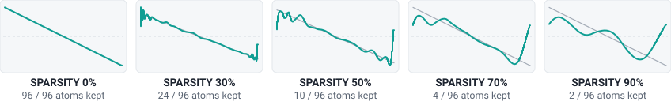
Figure 4. A SAW analysed with Daubechies 8 (96 non-zero atoms) at five SPARSITY settings (grey = original). At 30 % the jump is still drawn sharply; from 50 % on only coarse atoms remain and the saw turns into a smooth, wavy approximation of itself.
Source
0 %
25 %
50 %
75 %
90 %
100 %
SAW + Daubechies 2
20 / 20
9 / 20
4 / 20
2 / 20
1 / 20
1 / 20
SAW + Daubechies 8
96 / 96
31 / 96
10 / 96
3 / 96
2 / 96
1 / 96
SAW + Daubechies 20
179 / 179
49 / 179
13 / 179
4 / 179
2 / 179
1 / 179
NOISE (any wavelet)
2047 / 2047
304 / 2047
45 / 2047
7 / 2047
2 / 2047
1 / 2047
Atoms kept for a few sources, as “K / nz” exactly as the SOURCE CYCLE display shows them.
Coarse or fine steps. Sources that need few atoms change in clear jumps — a Daubechies 2 SAW has only 20, and Haar + SQUARE has a single atom, so there is nothing to remove at all. NOISE, and any slope analysed with Haar, use all 2047 atoms and change almost continuously.
SPARSITY acts before the filter, and the dry signal used by the POSITION window is the sparse version too.
Each change rebuilds the tables (crossfaded), so turning the knob while playing gives a stepped morph rather than a smooth sweep.
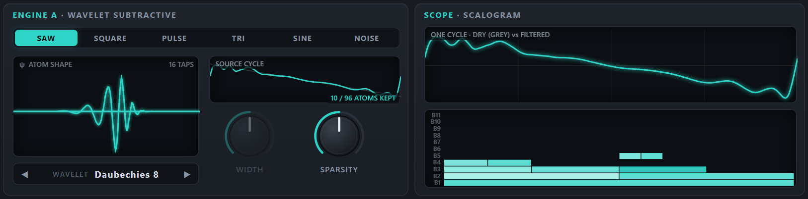
SAW + Daubechies 8 at SPARSITY 50 %: “10 / 96 ATOMS KEPT”. Only large, coarse atoms survive (bands 1–5 in the SCALOGRAM), so the ramp becomes a smooth, wavy approximation of itself.
UNDER THE HOOD — HOW MANY ATOMS DOES A WAVE NEED?
K = round(nz1 − SPARSITY), never more than nz. Atoms smaller than a billionth of the largest one count as zero. The table gives nz — the number after the slash in the display — for every wave (WIDTH 50 % unless stated) and wavelet.
Wave
Haar
DB2
DB4
DB8
Sym8
Coif3
DB20
SAW
2047
20
51
96
100
104
179
SQUARE
1
37
91
167
169
175
305
PULSE 35 %
11
45
95
169
170
177
300
TRI
2047
37
91
159
155
157
269
SINE
2047
2043
315
39
31
67
7
NOISE
2047
2047
2047
2047
2047
2047
2047
5Scale filter
The SCALE FILTER is the heart of engine A. It does not work on frequencies directly: it gives each of the 11 bands its own gain, and the sound is the sum of the band layers, each multiplied by its gain. A low-pass therefore removes the fine atoms — the small, sharp details of the cycle — and keeps the coarse ones. Because one band is about one octave of harmonics, the controls behave like those of a familiar synth filter: CUTOFF in bands, SLOPE in dB per band (≈ dB per octave), resonance, key tracking and envelope.
Two things are different from an analogue filter. There is no phase shift and no feedback, so a filtered edge becomes wider and smoother but stays exactly where it was in the cycle, and the resonance can never self-oscillate. And the character of a sweep depends on the WAVELET: with Haar every removed band halves the number of steps in the wave, with Daubechies 20 the bands are nearly pure octaves and the sweep sounds smooth.
Shape of the gain curve over the bands. LOW-PASS keeps the coarse bands and removes fine detail; HIGH-PASS keeps the fine bands and removes the body; BAND-PASS keeps about one band around the cutoff; BAND-REJ removes the band at the cutoff (a notch).
Band-pass on a low cutoff (2–3) gives thin, nasal tones; high-pass at 3–4 makes airy layers.
CUTOFFhost: Cutoff
0 – 12default band 12.0
Where the filter acts, in bands: 1 = the fundamental, 11 = the finest atoms, 12 = beyond the finest band — a low-pass is fully open there. Fractional values blend smoothly between bands.
With KEY TRK at 100 %, CUTOFF 8–12 all sound the same at middle C — only bands 1–7 exist there (see Where the bands are).
SLOPEhost: Slope
6 – 96 dB/banddefault +24.0 dB/band
How steeply bands beyond the cutoff are attenuated. One band ≈ one octave, so 24 dB/band behaves like a classic 4-pole (24 dB/octave) filter; 6 is gentle, 96 is a brick wall. For BAND-REJ it sets the notch width instead: the higher the slope, the narrower the notch.
36–96 with Haar gives crisp, stepped sweeps.
RESOhost: Resonance
0 – 24 dBdefault 0.0 dB
Boosts the bands around the cutoff by up to 24 dB (a bell about ±0.6 band wide). It is a band boost, not feedback, so it never self-oscillates. Ignored by BAND-REJ.
Resonance adds level (up to +24 dB at the cutoff band): keep an eye on the meter.
KEY TRKhost: Key Tracking
0 – 100 %default 100%
100 %: the cutoff follows the note, so every key has the same tone colour — the natural behaviour of this pitch-synchronous engine. 0 %: the cutoff stays at a fixed frequency referenced to C4 (261.63 Hz): every octave above C4 lowers the cutoff by one band, every octave below raises it by one.
50 % gives the familiar “darker as you go up” feel of an analogue filter.
ENV AMThost: Envelope Amount
−11 … +11 bandsdefault 0.0 bands
How far the MOD ENVELOPE moves the cutoff: −11 to +11 bands at the envelope’s peak. Positive values open the filter, negative values close it.
+4 to +6 bands with a short mod decay = the classic filter pluck.
VEL AMThost: Velocity Amount
−6 … +6 bandsdefault 0.0 bands
Velocity → cutoff. The shift is amount × (velocity − 1): a note at full velocity is not shifted; softer notes move the cutoff by up to the amount — down for positive amounts, up for negative ones.
+2 to +3 bands: soft notes darker, hard notes open.
LFOCUTOFF adds a further ± bands of periodic movement — see LFO.
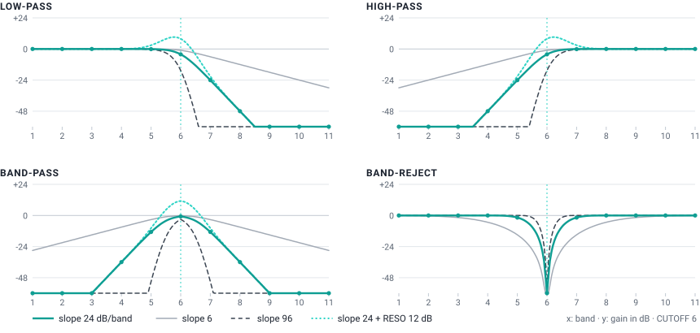
Gain per band at CUTOFF 6, computed with the instrument’s own filter code. Dots mark the gain actually applied to bands 1–11 at 24 dB/band. Note the soft knee: the band at the cutoff is already a little attenuated.
The four types in numbers
Low-pass — bands below the cutoff pass untouched; the band at the cutoff is about 0.17 × SLOPE down (−4 dB at 24 dB/band); each band further up loses about SLOPE dB more. At CUTOFF 12 (the default) every band is within 0.1 dB at 24 dB/band (0.4 dB at 96 dB/band): fully open.
High-pass — the mirror image: bands above the cutoff pass, bands below lose about SLOPE dB per band.
Band-pass — keeps a window about one band wide: at 24 dB/band the cutoff band is −0.8 dB, its neighbours −13 dB, two bands away −36 dB.
Band-reject — removes the band at the cutoff completely. The notch width depends only on SLOPE: at 6 dB/band it hollows out two or three bands on each side, at 24 its neighbours are only 1.6 dB down, at 96 nothing but the exact band is touched. With steep slopes, a cutoff between two bands (say 5.5) hardly notches anything — use whole numbers.
Resonance — adds up to +24 dB centred on the cutoff, falling off over about ±1 band. With a low-pass at 24 dB/band and RESO 12 dB, the cutoff band ends up at about +8 dB.
UNDER THE HOOD
The cutoff actually used for each voice, recomputed every 32 samples and smoothed sample by sample:
cutoff = CUTOFF + ENV AMT × mod envelope + LFO CUTOFF × LFO + VEL AMT × (velocity − 1) + (1 − KEY TRK) × log₂(261.63 Hz ÷ note frequency)
The mod envelope runs from 0 to 1, the LFO from −1 to +1 and velocity from 0 to 1. The note frequency includes OCTAVE, FINE, pitch bend and vibrato. The result is not clamped to 0–12, so modulation can push the filter past fully closed or past fully open.
One special case deserves a warning: with the Haar wavelet a SQUARE source is a single atom, so the filter has nothing to remove — see The square wave that will not filter.
6Position window
A classic filter treats every part of the waveform the same way. Wavelet atoms, however, live at definite places in the cycle — so engine A can filter one part of the cycle and leave the rest untouched. This is something an ordinary filter cannot do: soften only the falling edge of a square, darken only the reset of a sawtooth, or sweep a “filtered zone” around the cycle with the LFO.
Control
Range · default
What it does
Tip
POSITIONhost: Position
0° – 360°default 0°
Centre of the window inside the cycle, from 0° (start of the cycle) to 360° (end — the same point as 0°).
Put it on an edge of the wave: 180° is the falling edge of SQUARE.
WIDTHhost: Window Width
5 – 100 %default 50%
How much of the cycle the window covers (the full width of its raised-cosine bump). 100 % = a smooth bump over the whole cycle that only reaches zero opposite the centre.
Narrow windows (5–20 %) are automatically widened on high notes to avoid aliasing.
DEPTHhost: Window Depth
0 – 100 %default 0%
How strongly the window restricts the filter. 0 % = window off, the filter acts on the whole cycle (the normal case). 100 % = the filter acts only inside the window; outside it the unfiltered (dry) cycle plays.
In between, the area outside the window gets a blend.
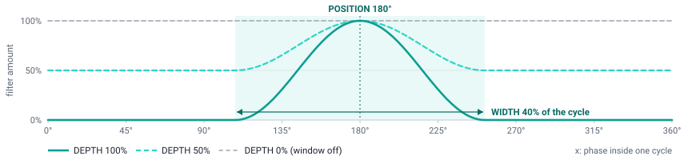
The window W over one cycle for POSITION 180°, WIDTH 40 % and three depths. The panel’s WINDOW display draws the same curve.
UNDER THE HOOD
W(φ) = (1 − DEPTH) + DEPTH × bump(φ) bump = raised cosine of total width WIDTH, centred on POSITION
φ is the position inside the cycle. The dry signal is the source after SPARSITY, with no filtering. Because the window is locked to the cycle, the result is still perfectly periodic — it changes the timbre, it never adds noise or detuning.
Where the edges are
Most of the action is at the edges of the source wave, where the fine atoms are. They sit at fixed positions:
Wave
Edges and corners
SAW
Ramps down through the whole cycle and jumps back up at 0° / 360°.
SQUARE
Rising edge at 0°, falling edge at 180°.
PULSE
Rising edge at 0°, falling edge at WIDTH × 360° (e.g. 126° at WIDTH 35 %).
TRI
Lowest corner at 0°, highest corner at WIDTH × 360°.
SINE
No edges — the window has little to work on.
NOISE
Detail everywhere.
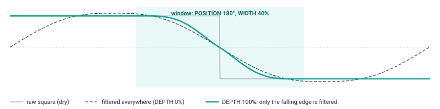
The idea behind the “A · Edge Pluck” preset: a Symlet 8 low-pass at CUTOFF 2.5 on a square wave. With DEPTH 0 % the whole cycle is rounded off (dashed); with DEPTH 100 % and the window on the falling edge only that edge is softened, while the plateaus and the rising edge keep the raw square’s bite.
High notes and modulation
A narrow window multiplies the sound by a short bump, which adds high harmonics. To keep this alias-free, the window is automatically widened on high notes: it is never narrower than 16 × note frequency ÷ sample rate of the cycle — about 9 % at C4 and 35 % at C6 (48 kHz). The minimum WIDTH of 5 % is only reached below about 150 Hz.
LFOPOSITION moves the window up to ±180° — all the way round the cycle — and is only audible when DEPTH is above 0 %. The SCOPE shades the window and the SCALOGRAM draws it as a dashed line.
7Envelopes
Two ADSR envelopes run for every voice. The AMP ENVELOPE shapes the loudness; the MOD ENVELOPE moves the filter cutoff, by the amount set with ENV AMT in the SCALE FILTER (it has no other destination and ignores velocity — use VEL AMT for velocity-dependent brightness).
AMP ENVELOPE
Control
Range · default
What it does
Tip
ATTACKhost: Amp Attack
1 ms – 10 sdefault 3.0 ms
Time to rise linearly from silence to full level.
1–5 ms is click-free for most sounds; 0.3–1 s for pads.
DECAYhost: Amp Decay
1 ms – 10 sdefault 400 ms
Time to fall from full level to the SUSTAIN level. Exponential: the time given is the time to fall by 60 dB of the remaining distance, so the curve looks finished after about half of it.
For plucks set SUSTAIN to 0 % and use DECAY as the note length.
SUSTAINhost: Amp Sustain
0 – 100 %default 80%
Level held while the key (or the sustain pedal) is down.
RELEASEhost: Amp Release
1 ms – 10 sdefault 300 ms
Time to fade by 60 dB after the key is released. The voice is freed at −100 dB.
Long releases overlap: raise VOICES for pads.
VELOCITYhost: Amp Velocity
0 – 100 %default 50%
How much velocity sets the loudness: level × (1 − VELOCITY × (1 − velocity)). 0 % = every note equally loud; 100 % = loudness proportional to velocity.
The computer keyboard always plays at velocity 80 %.
MOD ENVELOPE
Control
Range · default
What it does
Tip
ATTACKhost: Mod Attack
1 ms – 10 sdefault 3.0 ms
Attack of the modulation envelope (linear).
A slow mod attack (50–150 ms) gives brassy swells.
DECAYhost: Mod Decay
1 ms – 10 sdefault 500 ms
Decay to the mod SUSTAIN level (exponential, −60 dB time).
SUSTAINhost: Mod Sustain
0 – 100 %default 30%
Mod level held while the key is down.
RELEASEhost: Mod Release
1 ms – 10 sdefault 500 ms
Mod release after the key is released.
Attacks are linear; decays and releases are exponential, which sounds natural and avoids clicks. The small curve above the knobs shows the shape on a logarithmic time axis, so short and long settings are both readable.
Playing a note on a voice that is still sounding restarts the attack from the current level, without a click.
With VOICES at 1 (mono, legato), notes played while another key is held do not restart the envelopes.
8LFO
One LFO is shared by all voices. It runs freely and is not restarted by new notes, so in a chord every voice moves together — ideal for pads and vibrato. For a movement that starts with each note, use the MOD ENVELOPE instead.
Control
Range · default
What it does
Tip
SHAPEhost: LFO Shape
SINE · TRI · SAW · SQR · S&Hdefault Sine
SINE, TRI (triangle), SAW (ramps down, then jumps up), SQR (square) and S&H (sample & hold: a new random value once per LFO cycle).
S&H on CUTOFF or POSITION gives random, stepped timbres.
RATEhost: LFO Rate
0.05 – 20 Hzdefault 4.0 Hz
Speed, from one cycle every 20 s to 20 cycles per second (logarithmic taper).
5–6 Hz for vibrato; 0.1–0.5 Hz for slow sweeps.
PITCHhost: LFO to Pitch
0 – 100 centsdefault 0 ct
Vibrato depth: the pitch moves by up to ± this many cents (100 = ± one semitone).
The mod wheel adds up to 50 cents of extra depth.
CUTOFFhost: LFO to Cutoff
0 – ±6 bandsdefault ±0.0 bands
Moves the cutoff by up to ± this many bands.
1–2 bands on a resonant filter = a slow “wah”.
POSITIONhost: LFO to Position
0 – ±180°default ±0°
Moves the POSITION window by up to ± this many degrees; ±180° travels all the way round the cycle. Only audible when DEPTH is above 0 %.
Try it with a narrow window on a saw: see the “Scanning edge” recipe.
The mod wheel (on screen or MIDI CC 1) always acts through this LFO: it adds up to 50 cents of vibrato depth on top of PITCH, using the current SHAPE and RATE. With PITCH at 0, the wheel alone brings in vibrato.
9Voice
Control
Range · default
What it does
Tip
PORTAMENTOhost: Portamento
OFF · POLY · LEGATOdefault POLY
When notes glide from one pitch to the next; GLIDE sets how long a glide takes (at 0 nothing glides). OFF: never. POLY: polyphonic portamento — every voice glides from its own previous note (details below). LEGATO: only when the new note starts while another key is still held; in poly the new note glides from the held (most recent) note, exactly like a mono legato line. With VOICES at 1, POLY glides from the previous note every time and LEGATO only on tied notes; returning to a still-held note after releasing the top one glides too, unless the selector is OFF.
Most presets leave GLIDE at 0: raise it to hear the portamento. LEGATO is the expressive choice for leads, POLY for gliding chords.
OCTAVEhost: Octave
−3 … +3default 0
Transposes the instrument by whole octaves.
FINEhost: Fine Tune
−100 … +100 centsdefault 0 ct
Fine tuning in cents (100 cents = one semitone).
VOICEShost: Voices
1 – 16default 8
Maximum number of notes sounding at once. At 1 the instrument is monophonic and legato, with last-note priority.
Long releases and reverb-like pads need 8 voices or more.
GLIDEhost: Glide
off – 2 sdefault off
Portamento time: how long a glide takes; 0 (shown as “off”, the setting of most presets) means no portamento at all. The pitch slides exponentially; the value is the time to cover about 99 % of the interval. Whether a note glides at all is decided by the OFF / POLY / LEGATO selector.
Spread of the unison copies: the outer copies are at ± this many cents, the others evenly in between.
8–15 cents for warmth, 20+ for supersaw-style width.
STEREOhost: Stereo Width
0 – 100 %default 70%
Spreads the unison copies across the stereo field, from centre (0 %) to hard left and right (100 %).
No effect with UNISON 1.
Voice allocation. When all voices are busy, a new note takes over the oldest released voice first, then the oldest held one. Playing a note that is already sounding re-uses its voice.
Mono and legato. With VOICES at 1, holding a note and playing another changes the pitch without restarting the envelopes (it glides if GLIDE is above zero and the portamento selector is not OFF). Release the new note while still holding the first and the pitch returns to the first one. Legato means that another key is still physically held: with the sustain pedal down but no key held, a new note restarts the envelopes.
Polyphonic portamento (POLY). With GLIDE above 0, every voice glides from its own previous note. Playing one note at a time, the new note glides from the previous one (the voice of the last note is reused) while the release tails of older notes keep sounding. Playing chords, each new note takes the free voice whose last pitch is nearest, so chord changes glide voice by voice — from C–E–G to F–A–C, G slides to F, E to A, and C stays on C. A voice that has to be stolen glides from wherever it currently is.
Level. Each note plays at about −8 dB to leave headroom for chords, and unison copies are scaled by 1/√n so that stacking keeps the loudness roughly constant.
Voice LEDs. The 16 dots show the voices: dim = available, lit = sounding (including release tails). They sit to the right of the portamento selector.
10Sub oscillator
The SUB OSC section, at the bottom left next to the wheels, adds a simple oscillator one or two octaves below every note — the classic way to give a sound more low end, from a warm bass foundation to infra-bass you feel rather than hear.
Control
Range · default
What it does
Tip
LEVELhost: Sub Level
0 – 100 %default 0%
Level of the sub oscillator. 0 % (the default) switches it off; 100 % is about as loud as the main wavelet sound at full scale.
Start around 30–50 % for basses, and watch the meter: the sub adds a lot of energy.
OCThost: Sub Octave
−1 octave · −2 octavesdefault −1 octave
How far below the played note the sub sounds: one or two octaves. It follows the pitch exactly, including OCTAVE, FINE, glide, pitch bend and vibrato.
−2 octaves on low notes goes below 20 Hz: felt more than heard.
SHAPEhost: Sub Shape
Sine · Triangle · Squaredefault Sine
Waveform of the sub: a pure sine; a soft triangle (odd harmonics that fall quickly); or a square with strong odd harmonics, band-limited with PolyBLEP so it does not alias.
On small speakers choose TRI or SQR: their harmonics stay audible when the fundamental is too low to be reproduced.
One sub per voice. Every note gets one sub oscillator, centred in the stereo field — not one per unison copy, so UNISON, DETUNE and STEREO neither thicken nor spread it.
Outside the wavelet engine. The sub is added after the SCALE FILTER and the POSITION window, so none of them affects it: it stays clean and steady while you sweep the wavelet sound. Then the AMP ENVELOPE (and velocity) shapes it like the rest of the note, and it goes through the effects — DRIVE saturates it too.
How low? On C2 (65 Hz) the sub sits at 33 Hz (−1 octave) or 16 Hz (−2 octaves); with OCTAVE at −1 it goes one more octave down. Below about 20 Hz you feel rather than hear it, and laptop speakers, small monitors and most headphones cannot reproduce it at all. The output’s 10 Hz DC blocker softens the very lowest frequencies (about −1.5 dB at 16 Hz, −4 dB at 8 Hz).
The SCOPE and SCALOGRAM show the wavelet sound only; the sub is not drawn.
11Effects and master
The effects process the sum of all voices — wavelet sound and sub oscillator together — in this order: saturation → ping-pong delay → reverb → DC blocker → master volume → soft limiter. The delay and reverb mix knobs add the effect on top of the unchanged dry sound (there is no dry/wet crossfade), so raising them also makes the sound a little louder. The reverb receives the echoes of the delay as well.
Control
Range · default
What it does
Tip
DRIVEhost: Drive
0 – 100 %default 0%
Saturation: blends in a smooth tanh soft-clipper driven by up to +24 dB, with automatic level compensation. 0 % = bypassed.
20–40 % thickens basses and Haar sounds.
TIMEhost: Delay Time
10 ms – 1 sdefault 350 ms
Delay time (logarithmic taper). Changing it while echoes are ringing makes them glide in pitch, like a tape delay.
350 ms ≈ a dotted eighth at 128 BPM.
FEEDBACKhost: Delay Feedback
0 – 90 %default 35%
How much of each echo is fed back: more repeats. Echoes alternate between left and right and get darker with every repeat.
Above 70 % the repeats last many seconds.
DLY MIXhost: Delay Mix
0 – 100 %default 0%
Level of the echoes added to the sound.
SIZEhost: Reverb Size
0 – 100 %default 60%
Reverb decay length, from a small room to a long hall.
REV MIXhost: Reverb Mix
0 – 100 %default 0%
Level of the reverb added to the sound.
15–25 % for most sounds; 40 %+ for pads.
VOLUMEhost: Master Volume
−36 … +6 dBdefault −3.0 dB
Master output level — the small knob in the header, next to the stereo meter. Hover over it to read the value.
Lower it when the meter sits at the top: the output limiter is then working hard.
Ping-pong delay. The mono sum of the voices enters the left channel; each repeat crosses to the other side and passes a gentle low-pass, so echoes bounce between the speakers and darken as they fade.
Reverb. A Freeverb-style stereo reverb (eight comb and four all-pass filters per channel) with fixed high-frequency damping; SIZE sets the decay.
Output stage. A 10 Hz DC blocker removes any offset, then the master VOLUME is applied, then a soft limiter: it is transparent below −3 dBFS and never lets the output exceed 0 dBFS, so the instrument cannot clip your audio interface or your Live track.
Meter. The stereo meter shows the output peak over the top 48 dB; the top of the bars is 0 dBFS. If the bars sit near the top, the limiter is working: lower VOLUME, RESO or the number of unison copies for a cleaner sound.
12Displays
Display
What it shows
Good to know
SCOPE
One cycle of the sound. Teal = the output, grey = the dry (unfiltered) cycle, shaded area = the POSITION window.
At rest it shows the patch as set (cutoff, no envelopes, LFO or velocity). While you play it follows the most recent note live, tagged e.g. “C4 · LIVE”.
SCALOGRAM
The 11 bands as rows (B1 at the bottom, B11 at the top), one cell per atom. Brightness = size of the atom after the band gains, on a 60 dB scale: black = more than 60 dB down. The dashed line is the POSITION window.
Fine rows have more atoms than pixels; each pixel then shows the largest atom it covers.
ATOM SHAPE
One atom of the selected wavelet (ψ) and the length of its filter in taps.
Longer = smoother, more “sine-like” bands.
SOURCE CYCLE
The selected wave in grey, the cycle after SPARSITY in teal, and how many atoms are kept out of the nz atoms the wave needs: “K / nz ATOMS KEPT”.
Only engine A has this display.
WINDOW
The POSITION window over one cycle. Reads “WINDOW OFF · RAISE DEPTH” while DEPTH is 0 %.
ADSR curves
The shape of the AMP and MOD envelopes, on a logarithmic time axis.
Voice LEDs
Available (dim) and sounding (lit) voices, to the right of the portamento selector.
Meter
Left and right output peak, top = 0 dBFS.
The SCOPE and SCALOGRAM draw the cycle as it is stored, before the per-note band limiting described in Where the bands are; on high notes the finest rows are not actually played. The sub oscillator is not drawn.
13Sound-design recipes
Each recipe starts from a factory preset and uses only the controls on the panel. Values are what the panel shows when you hover over a knob.
ENV AMT +5 bands. MOD ENVELOPE: ATTACK 3 ms, DECAY 600 ms, SUSTAIN 20 %, RELEASE 500 ms.
Play a few notes: each one opens to band 8 (3 + 5) and settles near band 4 (3 + 5 × 20 %).
Step through the wavelets while playing: Haar turns the sweep into gritty staircases, Daubechies 2 adds lopsided ringing, Daubechies 20 is the smoothest.
Listen for: the resonance colours a whole octave of harmonics rather than a single frequency, and with KEY TRK at 100 % the sweep has the same colour on every key.
Pitch-locked decimator (Haar staircase)
Start from: A · Init
WAVESAW, WAVELET Haar.
LOW-PASS, SLOPE 96 dB/band, RESO 0 dB.
Set CUTOFF to 4.5, 3.5, 2.5 and 1.5 in turn: the ramp becomes a staircase of 16, 8, 4 and finally 2 steps (a square). Halfway values between bands give the cleanest steps.
For random step changes: LFOSHAPES&H, RATE 6 Hz, CUTOFF 2 bands.
Add DRIVE 30 % for grit.
Listen for: a bit-crusher-like reduction that is locked to the note: the steps are a whole number per cycle, so the pitch stays clean, and the band-limited tables keep it free of aliasing.
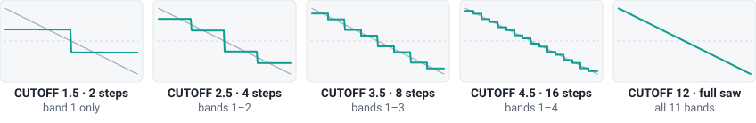
Figure 5. Haar SAW through a 96 dB/band low-pass: each removed band halves the number of steps per cycle.
Edge pluck: filter only the falling edge
Start from: A · Edge Pluck (or A · Init)
WAVESQUARE, WAVELET Symlet 8.
CUTOFF 2.5, SLOPE 24 dB/band, ENV AMT +6 bands. MOD ENVELOPE: DECAY 350 ms, SUSTAIN 0 %.
POSITION: POSITION 180°, WIDTH 40 %, DEPTH 100 %. The WINDOW display shows a bump in the middle and the SCOPE shades it.
Play, then set DEPTH to 0 % to hear the same filter on the whole cycle — duller and rounder.
Try next:POSITION 0° softens the rising edge instead; WIDTH 100 % with DEPTH 50 % gives a gentle blend. Because the rising edge stays raw, the note keeps a bright core however low the cutoff goes.
Hold a chord and move SPARSITY between 30 % and 90 %: with only 20 atoms to begin with, they drop out one by one and the timbre changes in clear jumps, like a low-bit-rate codec.
Try next: Daubechies 8 or 20 give the saw more atoms (96 and 179) and finer steps; TRI with SPARSITY 70–95 % for bell-like tones built from a handful of atoms; Haar with high sparsity for blocky, chip-like steps.
Noise brass
Start from: A · Noise Brass (or A · Init)
WAVENOISE — a fixed random cycle, so it is pitched, not hiss. WAVELET Coiflet 3.
Hold a note and watch the dashed window travel through the SCALOGRAM: whenever it covers the saw’s jump at 0°/360° the tone darkens; elsewhere the raw saw shines through.
DLY MIX 20 %, REV MIX 20 %.
Try next:SQR at 2 Hz for a rhythmic open/closed edge, or S&H for random scanning.
Octave notch phaser
Start from: A · Init
WAVESAW, WAVELET Daubechies 20 (the cleanest octaves).
TYPEBAND-REJ, CUTOFF 4, SLOPE 24 dB/band.
LFO: TRI, RATE 0.3 Hz, CUTOFF 1.5 bands.
Hold a chord: the notch sweeps from band 2.5 to 5.5, hollowing out one octave of harmonics at a time.
Lower SLOPE to 6 for a wide, soft notch; raise it to 96 for a narrow notch that only bites as it crosses each band.
Listen for: a phaser-like motion whose notches stay musically aligned to octaves of the note.
Expressive mono bass
Start from: A · Haar Bass
WAVEPULSE, WIDTH 35 %, WAVELET Haar, OCTAVE −1.
CUTOFF 3.5, SLOPE 36 dB/band, RESO 6 dB, ENV AMT +4 bands. MOD ENVELOPE: DECAY 250 ms, SUSTAIN 0 %.
VOICES 1 (mono), GLIDE 40 ms, DRIVE 30 %. SUB OSCLEVEL 45 % (−1 octave, sine) for weight.
VEL AMT +3 bands: soft notes stay up to three bands darker, hard notes open fully.
KEY TRK 50 %: higher notes get relatively darker, like an analogue bass.
Try next:WIDTH 25 % — the edges land on quarter-cycle boundaries, Haar needs only two atoms and the filter suddenly has almost nothing to remove (see the square wave that will not filter).
Expressive legato lead
Start from: A · Wavelet Lead
The preset is already mono (VOICES 1) with a short glide. In the VOICE section, set the portamento selector to LEGATO.
GLIDE 120 ms, so that the slides are clearly audible.
Play a melody with detached notes: each one starts right on pitch, with a fresh filter envelope.
Now connect two notes — press the next key before releasing the previous one: the pitch slides and the envelopes carry on. Release the upper note while still holding the lower one, and the pitch slides back down.
Push the mod wheel up on long notes for extra vibrato.
Listen for: the “fingered portamento” of classic monophonic synthesizers — you decide note by note whether to slide, simply by how you play. With POLY every note would glide; with OFF none would.
Polyphonic glide pad
Start from: A · Warm Pad (the default sound)
Keep the portamento selector on POLY (the default) and set GLIDE to 300 ms — the preset’s glide is off.
Play a chord, release it, then play the next one: C–E–G, then F–A–C. Each voice glides from its own previous note: G slides down to F, E up to A, and C stays where it is.
Try other changes — Am to F, C to Em — and listen to the inner voices crossing smoothly.
Play single notes: each new note slides from the previous one while the release tails of the older notes keep sounding.
Switch to LEGATO: chords now glide only when you keep a key down while playing the next notes; OFF turns portamento off.
Listen for: chord changes that bend into each other voice by voice, like a string section sliding between chords — something a mono portamento cannot do.
Play between C3 and C4 on a system with a subwoofer: the filtered square gives each note its definition, the sub (16–33 Hz) adds pressure you feel. Below about E3 the sub is under 20 Hz.
Try next:SHAPETRI to hear the sub on headphones; OCT −1 octave for a punchier, audible sub; DRIVE 30 % adds harmonics that small speakers can play.
14Factory presets
17 factory presets show what engine A can do, from clean sounds to extreme effects. Load one, play, then look at the panel to see how it is made — the table lists every setting that differs from the defaults. In the instrument’s preset menu the engine A and engine B presets alternate; this table shows engine A’s only. The Effects column rates how much each preset relies on effects and movement (delay, reverb, saturation, unison, LFO, sub oscillator): nonelightmediumheavyextreme.
Preset
Effects
Sound
Settings that differ from the defaults
A · Square Mod 2
medium
By OktoPierre, from Warm Pad (same envelopes, three-copy unison, delay and reverb): Daubechies 20 atoms through a resonant BAND-PASS around band 5.4 (RESO 17.75 dB) that the 0.4 Hz LFO sweeps ±3.75 bands up and down, with a light 5-cent vibrato. Chords drive the strong resonance into the output limiter.
WAVE Saw · WAVELET Daubechies 20 · TYPE Band-pass · CUTOFF 5.4 · RESO 17.8 dB · AMP A 600 ms · AMP D 1.00 s · AMP S 85% · AMP R 1.40 s · LFO RATE 0.40 Hz · LFO→PITCH +5 ct · LFO→CUTOFF ±3.8 bands · UNISON 3 · DETUNE +16 ct · STEREO 90% · DLY TIME 420 ms · FEEDBACK 30% · DLY MIX 12% · REV SIZE 70% · REV MIX 30% · VOLUME −6.0 dB
A · Wavelet Lead
medium
Mono legato lead with 60 ms glide: a resonant Daubechies 8 low-pass that the mod envelope opens by 4 bands on every attack, two detuned unison copies, 5.5 Hz vibrato, delay and reverb.
WAVE Saw · WAVELET Daubechies 8 · CUTOFF 4.5 · RESO 9.0 dB · ENV AMT +4.0 bands · MOD D 600 ms · MOD S 20% · LFO RATE 5.5 Hz · LFO→PITCH +8 ct · VOICES 1 · GLIDE 60 ms · UNISON 2 · DETUNE +9 ct · DLY TIME 320 ms · DLY MIX 22% · REV MIX 15%
A · Haar Bass
medium
Gritty mono bass one octave down: a Haar PULSE (35 %) through a steep 36 dB/band resonant low-pass with a fast envelope snap, saturation, and a sine sub one octave below at 45 %.
WAVE Pulse · WAVELET Haar · WIDTH 35% · CUTOFF 3.5 · SLOPE +36.0 dB/band · RESO 6.0 dB · ENV AMT +4.0 bands · AMP A 2.0 ms · AMP S 70% · AMP R 100 ms · MOD D 250 ms · MOD S 0% · OCTAVE −1 · VOICES 1 · DRIVE 30% · VOLUME −4.0 dB · SUB LEVEL 45% · SUB −1 octave · SUB SHAPE Sine
A · Edge Pluck
light
A pluck in which only the falling edge of a Symlet 8 SQUARE is filtered (window at 180°, depth 100 %): the envelope opens and closes that edge while the rest of the square stays raw.
WAVE Square · WAVELET Symlet 8 · CUTOFF 2.5 · ENV AMT +6.0 bands · POSITION 180° · WINDOW WIDTH 40% · DEPTH 100% · AMP D 1.20 s · AMP S 0% · AMP R 400 ms · MOD D 350 ms · MOD S 0% · REV MIX 25% · VOLUME −7.0 dB
A · Infra Sub Bass
medium
Mono bass one octave down with a strong sine sub two octaves below it (85 %): below about E3 the sub falls under 20 Hz — felt rather than heard, so use a system with a subwoofer.
WAVE Square · WAVELET Symlet 8 · CUTOFF 3.0 · SLOPE +30.0 dB/band · ENV AMT +2.5 bands · AMP D 600 ms · AMP R 150 ms · MOD D 300 ms · MOD S 20% · OCTAVE −1 · VOICES 1 · GLIDE 30 ms · REV MIX 5% · VOLUME −4.0 dB · SUB LEVEL 85% · SUB −2 octaves · SUB SHAPE Sine
A · Dub Echo Lead
heavy
Resonant PULSE lead drowned in long ping-pong echoes (375 ms, 72 % feedback, 55 % mix): dub-style repeats that keep bouncing.
WAVE Pulse · WAVELET Daubechies 4 · WIDTH 30% · CUTOFF 5.0 · RESO 10.0 dB · ENV AMT +3.0 bands · MOD D 300 ms · MOD S 10% · VOICES 1 · GLIDE 40 ms · DLY TIME 375 ms · FEEDBACK 72% · DLY MIX 55% · REV MIX 20% · VOLUME −5.0 dB
A · Fuzz Bass
heavy
Aggressive mono bass: a Haar sawtooth one octave down through 85 % saturation, with a square sub an octave below.
WAVE Saw · WAVELET Haar · CUTOFF 3.5 · RESO 8.0 dB · ENV AMT +3.0 bands · AMP A 2.0 ms · AMP D 500 ms · AMP R 80 ms · MOD D 200 ms · MOD S 10% · OCTAVE −1 · VOICES 1 · DRIVE 85% · VOLUME −7.0 dB · SUB LEVEL 60% · SUB −1 octave · SUB SHAPE Square
A · Laser Sweep
extreme
Sci-fi zaps: a very resonant (20 dB), steep Daubechies 2 filter swept ±4 bands by a 6 Hz saw LFO that also moves a narrow position window, with drive and fast echoes.
Warm, wide pad: a Coiflet 3 sawtooth breathing through a slow ±0.8-band LFO filter movement, three detuned copies spread wide, reverb and soft echoes.
WAVE Saw · WAVELET Coiflet 3 · CUTOFF 5.0 · RESO 4.0 dB · AMP A 600 ms · AMP D 1.00 s · AMP S 85% · AMP R 1.40 s · LFO RATE 0.40 Hz · LFO→CUTOFF ±0.8 bands · UNISON 3 · DETUNE +16 ct · STEREO 90% · DLY TIME 420 ms · FEEDBACK 30% · DLY MIX 12% · REV SIZE 70% · REV MIX 30% · VOLUME −5.0 dB
A · Sparse Keys
light
Glassy, lo-fi keys: a Daubechies 2 SAW reduced to 7 of its 20 atoms (SPARSITY 35 %), with a long decay, reverb and a touch of delay.
WAVE Saw · WAVELET Daubechies 2 · SPARSITY 35% · CUTOFF 9.0 · AMP D 1.50 s · AMP S 30% · AMP R 500 ms · DLY MIX 12% · REV MIX 20%
A · Square Mod
medium
By OktoPierre, from Warm Pad (same envelopes, three-copy unison, delay and reverb): Haar atoms through a very resonant low-pass (CUTOFF 3.06, RESO 17.75 dB) that the slow LFO still moves ±0.8 band — a stepped, resonant “square-ish” pad with a light 5-cent vibrato. Chords drive the strong resonance into the output limiter.
WAVE Saw · WAVELET Haar · CUTOFF 3.1 · RESO 17.8 dB · AMP A 600 ms · AMP D 1.00 s · AMP S 85% · AMP R 1.40 s · LFO RATE 0.40 Hz · LFO→PITCH +5 ct · LFO→CUTOFF ±0.8 bands · UNISON 3 · DETUNE +16 ct · STEREO 90% · DLY TIME 420 ms · FEEDBACK 30% · DLY MIX 12% · REV SIZE 70% · REV MIX 30% · VOLUME −6.0 dB
A · Glass Pad
medium
Slow pad: a Daubechies 20 triangle with a 12 dB resonant peak that a 0.3 Hz LFO sweeps ±1.5 bands, three-copy unison and plenty of reverb.
WAVE Triangle · WAVELET Daubechies 20 · CUTOFF 6.0 · RESO 12.0 dB · AMP A 800 ms · AMP D 1.00 s · AMP R 1.50 s · LFO RATE 0.30 Hz · LFO→CUTOFF ±1.5 bands · UNISON 3 · DETUNE +14 ct · DLY MIX 15% · REV MIX 40% · VOLUME −5.0 dB
A · Noise Brass
light
A brassy swell from the fixed NOISE cycle: a resonant Coiflet 3 low-pass opened by a mod envelope with an 80 ms attack, soft amp attack and two unison copies.
WAVE Noise · WAVELET Coiflet 3 · CUTOFF 3.0 · RESO 6.0 dB · ENV AMT +5.0 bands · AMP A 50 ms · AMP S 90% · MOD A 80 ms · MOD D 600 ms · MOD S 40% · UNISON 2 · DETUNE +8 ct · REV MIX 18%
A · Scanning Edge
medium
A 25 %-wide filter window on a Daubechies 8 SAW, swept all the way around the cycle by a 0.25 Hz LFO: the tone darkens each time the window crosses the saw’s jump.
Clean, velocity-sensitive keys: a symmetric Daubechies 8 triangle with a gentle envelope opening (+2 bands) and a touch of small-room reverb.
WAVE Triangle · WAVELET Daubechies 8 · CUTOFF 7.0 · ENV AMT +2.0 bands · AMP A 2.0 ms · AMP D 1.20 s · AMP S 30% · VELOCITY 70% · MOD D 400 ms · MOD S 20% · REV SIZE 40% · REV MIX 8%
A · Cathedral Saw
extreme
A soft Daubechies 20 sawtooth in an enormous hall: maximum reverb size at 85 % mix, slow attack and a 2.5 s release.
WAVE Saw · WAVELET Daubechies 20 · CUTOFF 6.5 · AMP A 50 ms · AMP S 90% · AMP R 2.50 s · UNISON 2 · DETUNE +8 ct · REV SIZE 100% · REV MIX 85% · VOLUME −10.0 dB
A · Init
none
Neutral starting point: a Daubechies 4 SAW through a low-pass at CUTOFF 7 — almost open at middle C (only band 7 is softened, by 4 dB), darker on low notes, where bands 8–9 exist and are cut.
WAVE Saw · WAVELET Daubechies 4 · CUTOFF 7.0
Browsing and saving presets
The preset browser sits in the header. The 32 factory presets start with OktoPierre’s 15 favourite sounds (from A · Square Mod 2 to A · Square Mod); the others follow, alternating between the two engines, with the two Init presets last. ◀ ▶ step through them in that order (and then, in the web app, through your own). Clicking the name opens the list: in the web app one FACTORY PRESETS list in which a coloured letter before each name gives its engine (A in teal, B in amber), followed by your USER PRESETS. A dot after the preset name means the sound has been modified since it was loaded. The tables in this manual group the presets by engine.
Web app. The buttons at the right of the status bar manage your own sounds:
Save preset asks for a name (up to 40 characters) and stores the sound in this browser’s storage, in the USER PRESETS group.
Export downloads the current sound as a .json file named after the preset — the way to back up sounds or move them to another computer.
Import loads such a file, adds it to the user presets and selects it. Parameters missing from the file take their default value.
To delete a user preset, open the list, hover over it and click ✕ (you are asked to confirm). Factory presets cannot be deleted.
The app always opens on A · Warm Pad; it does not bring back the sound you had when you closed it. Save or export a sound you want to keep — your user presets stay in the list.
VST3 plugin. ◀ ▶ and the preset menu (a standard Windows menu) list the factory presets. Save your own sounds with Live: the plugin’s settings are stored in the Live Set, and you can save the device as a Live preset (or inside an Instrument Rack) to reuse it in other projects. A new instance starts on A · Warm Pad.
The web app’s preset list: one factory list, OktoPierre’s favourite sounds first, with a teal A or an amber B before each name.
NOTE
User presets saved in the browser live in that browser profile only. Private windows and “clear site data” erase them — use Export for anything you want to keep.
15Playing
Demo (web app)
The demo control next to the logo is a split button. ▶ DEMO plays the default demo straight away; the small ▾ beside it opens the list of all demo pieces and Load a MIDI file…. While a demo plays, the main button reads ■ STOP. The 8 pieces, by L. van Beethoven and J. S. Bach, are free editions from the Mutopia Project, each cut after about two minutes at the end of a phrase; the notes are played sample-accurately by a sequencer inside the audio engine.
The default demo: a tour of the presets
▶ DEMO plays L. van Beethoven — Appassionata (III) (2:07) as a preset tour: A · Warm Pad plays the opening chords while its CUTOFF opens from band 1.5 to band 9; then about every 4 seconds, on a change of chord in the music, the next factory preset is loaded — A · Warm Pad → A · Wavelet Lead → A · Square Mod 2 → A · Haar Bass … — after A · Warm Pad and A · Wavelet Lead come the other presets in the order of the preset menu (OktoPierre’s favourite sounds first), wrapping around after the last one, so one run goes through all 31 presets of the tour (A · Square Mod is left out, so the tour has 31 of the 32 factory presets). The preset browser in the header shows the name of the preset being played (with the “•” modified mark while a control moves).
To keep every preset playable on the piece, each preset is played polyphonic (16 voices), at its normal octave, without glide and with its attack shortened to at most 80 ms; long echoes are reduced (delay mix at most 10 %, feedback at most 30 %) so the fast piece stays clear. The presets themselves are not changed.
The demo window shows “Preset tour · n/31 · Engine A/B” (n = the preset’s place in the tour), “Now playing:” with the preset’s name, a countdown to the next preset with its name, and a one-line summary of the sound, ending with “Played polyphonic at its normal octave, with short echoes.”
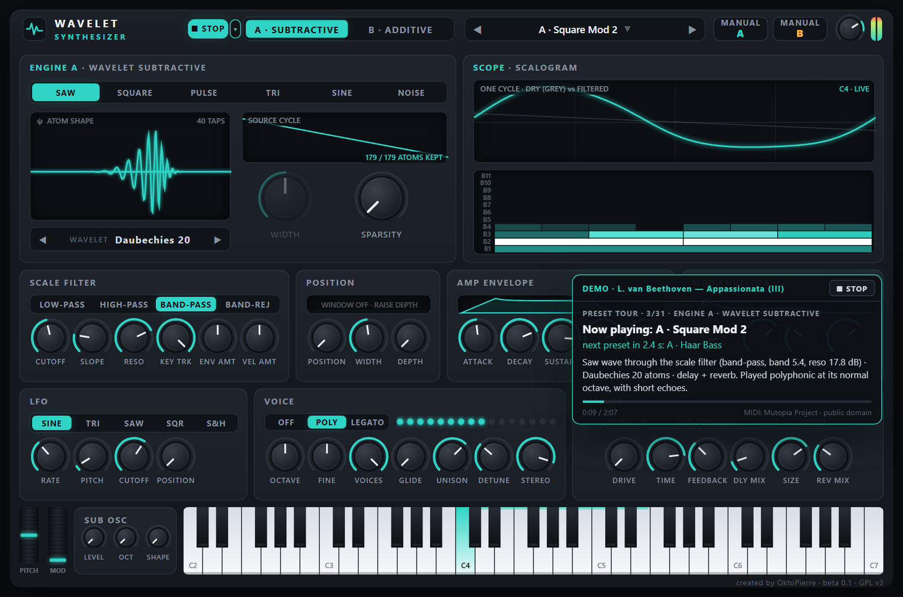
The default demo about 9 seconds in: the tour has reached its third preset, “A · Square Mod 2” (hence “3/31”). The window counts down to the next preset and summarises the sound; the scope runs live and the keys of the playing notes light up.
All demo pieces
Piece
Composer
Length
Demo
Licence
Appassionata (III)Sonata "Appassionata" Op. 57 — III. Allegro ma non troppo, Presto
Pathétique (I)Sonata "Pathétique" Op. 13 — I. Grave, Allegro di molto e con brio
L. van Beethoven
2:09
Automatic scenes
Public Domain
The Tempest (I)Sonata "The Tempest" Op. 31 No. 2 — I. Largo, Allegro
L. van Beethoven
2:13
Automatic scenes
Public Domain
Sonata Op. 111 (I)Sonata No. 32 Op. 111 — I. Maestoso, Allegro con brio ed appassionato
L. van Beethoven
2:27
Automatic scenes
Public Domain
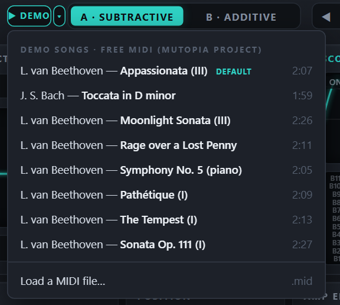
The ▾ menu: composer — short title and length (hover over an entry for the full title); the default demo is tagged DEFAULT; then “Load a MIDI file…”.
Scenes. The other pieces animate the controls instead of changing presets: a series of scenes follows the phrases, each varying one control. The Toccata in D minor has 11 hand-written scenes (table below); the remaining pieces get scenes placed automatically at the natural pauses of the music, from a list of scene templates chosen for each piece: filter sweep, resonance, filter slope, source wave, position window, sparsity, sub oscillator, wavelet atom shape, tilt, atom patterns, drawbars, ping-pong delay, unison and a reverb finale. The window then shows the scene and engine, “Now varying:” with the parameter’s name, its live value and range, and a one-line explanation, and the animated control glows on the panel.
Start and stop.▶ DEMO starts the default demo; ▾ lets you pick any piece (the list opens without starting the audio). Stop with ■ STOP in the header or in the demo window, or with Esc (when the manual overlay is closed). Drag the demo window by its title bar to move it out of the way; it also shows the progress, the time and the source and licence of the music.
Your sound is safe. When a demo ends or is stopped, the sound you had before is restored exactly; your preset and settings are not changed. During a demo the preset browser shows what is being played: during the preset tour exactly the current preset’s name; in the other demos the name of the scene’s starting preset with the “•” modified mark (the Toccata, for example, starts on “B · Octave Organ•”). Your preset name comes back when the demo stops, and changes you make on the panel during the demo are discarded.
Play along. The keyboard, the computer keys and a MIDI keyboard keep working during the demo; the demo’s own notes also light up the on-screen keyboard.
One window at a time. Closing or leaving the page stops the demo and the audio immediately. If the app is open in two windows or tabs of the same browser, only one plays: starting the audio in one pauses the other, which then shows “The synthesizer is playing in another window or tab, so this one was paused.” and a Click to play here button to take the audio back.
Playing your own MIDI file
Choose Load a MIDI file… in the ▾ list and pick a .mid file: it is played with automatically generated scenes, like the demo pieces. Drums (MIDI channel 10) are ignored, and only the first 6 minutes are played; a file without playable notes is refused with a message.
NOTE
Only play music that is in the public domain or that you have the right to use. No copyrighted songs are bundled with the instrument: every demo piece is a free edition from the Mutopia Project, listed above with its licence.
The Toccata in D minor scenes
Time
Scene
Animated
Explanation in the demo window
0:00
1. Opening motifEngine B
WAVELET Daubechies 20 → Symlet 8 → Haar
Engine B builds every note from wavelet atoms. Same drawbars, three atom shapes: smooth (Daubechies 20), wavy (Symlet 8), square steps (Haar).
0:06
2. The D minor chordEngine B
TILT −12.0 dB/band → +1.0 dB/band
Tilt lifts the fine bands relative to the fundamental band: the organ opens up as the chord builds.
0:11
3. First runEngine A
CUTOFF band 1.5 → band 10.0
Engine A filters a sawtooth in the wavelet domain. Raising the cutoff lets finer bands (higher octaves of harmonics) through.
0:19
4. Echo of the runEngine A
RESO 0.0 dB → 18.0 dB
Resonance boosts the bands around the cutoff: the ringing takes the shape of the wavelet itself.
0:27
5. Diminished passageEngine A
SLOPE +6.0 dB/band → +72.0 dB/band
Slope is the attenuation per band above the cutoff (about dB per octave): from gentle to brick-wall.
0:38
6. ChordsEngine A
WAVE Square → Pulse → Triangle
The source cycle changes (square, pulse, skewed triangle) and its wavelet bands are recomputed on the fly.
0:45
7. Fast arpeggiosEngine A
DEPTH 0% → 100%, with LFOPOSITION ±180°
The position window applies the filter only inside part of each cycle, and the LFO moves that window around the cycle. A classic filter cannot do this.
0:59
8. SequenceEngine A
SPARSITY 0% → 92%
Sparsity keeps only the strongest atoms, like a lossy codec: the tone becomes more and more skeletal.
1:08
9. Atom patternsEngine B
PATTERN Ramp → Mirror → Walsh → Random
Engine B writes the atom coefficients directly. Ramp, Mirror, Walsh and Random patterns give different harmonic families.
1:25
10. RecitativeEngine B
1 … 11 drawbars: a wave travels from band 1 to band 11
The 11 drawbars are the band levels, one per octave of harmonics. A wave travels across them, from the fundamental to the finest band.
1:45
11. Final cadenceEngine B
REV MIX 25% → 60%
Back to the full wavelet organ; the reverb grows for the final chord.
Demo music: MIDI files from the Mutopia Project. Sonata "Moonlight" Op. 27 No. 2 — III. Presto agitato (L. van Beethoven) is licensed CC BY-SA 2.5 — Mutopia Project, typeset by Stewart Holmes; its converted note data in the app is shared under the same licence. All other pieces are in the public domain. The full list of sources and licences is in tools/demo/SOURCE.md. The demo is part of the web app only; the VST3 plugin has no DEMO button.
On-screen keyboard and wheels
The keyboard spans five octaves, C2 to C7. Click a key to play it; the vertical position sets the velocity — from 35 % at the top of a key to 100 % at its bottom edge. Drag across the keys to slide from note to note.
The PITCH wheel bends by up to ±2 semitones and springs back to the centre when you let go. The MOD wheel adds vibrato (up to 50 cents, through the LFO) and stays where you leave it. Both wheels follow incoming MIDI.
Held notes light up in the accent colour; a thin coloured strip above the keys shows the range played by the computer keyboard.
Computer keyboard (web app)
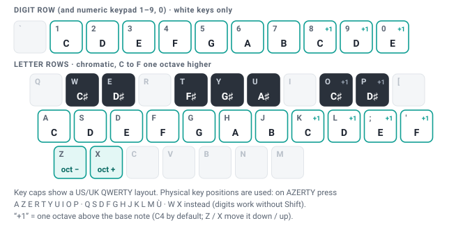
Computer keyboard map. The digit row plays the white keys (do ré mi fa sol la si do ré mi); the letter rows play chromatically like a piano; Z / X move the whole map down or up an octave.
Keys
Notes
Notes on use
1234567890 and numeric keypad 1–9, 0
C D E F G A B C D E
White keys only — quick for melodies. Starts on the same C as the letter rows.
AWSEDFTGYHUJ
C C♯ D D♯ E F F♯ G G♯ A A♯ B
Middle letter row = white keys, row above = black keys.
KOLP;'
C C♯ D D♯ E F (next octave)
Z / X
Octave down / up
Base note from C1 to C7; the status bar shows it (“octave C4” by default).
Physical key positions are used, so the map works on any layout. On AZERTY the white keys are QSDFGHJKLMÙ, the black keys ZETYUOP, the octave keys W / X, and the digit row plays without Shift. On QWERTZ, Z and Y swap places.
Computer-keyboard notes play at a fixed velocity of 80 %. Holding a key does not repeat the note.
Keys are ignored while the manual overlay is open, while you type in a text field, and together with Ctrl, Alt or ⌘. If the browser window loses focus, held notes are released.
The VST3 plugin has no computer-keyboard map of its own: use Live’s Computer MIDI Keyboard (M).
MIDI
The web app uses Web MIDI, which works best in Chrome and Edge (if a browser does not offer it, the status bar says MIDI: not supported by this browser). When audio starts it asks for MIDI access, listens to all connected inputs on all channels, and lists the devices in the status bar (e.g. MIDI: KeyStep 37). Devices plugged in later are picked up automatically. In the plugin, MIDI comes from the Live track.
MIDI message
Effect
Note on / off
Plays notes; velocity 1–127 sets the velocity used by the AMP ENVELOPE and VEL AMT.
Pitch bend
±2 semitones.
CC 1 — mod wheel
Adds up to 50 cents of vibrato through the LFO.
CC 64 — sustain pedal
Held notes keep sounding until the pedal is released.
CC 120 — all sound off
Silences everything at once, including delay and reverb tails (web app).
CC 123 — all notes off
Releases all notes; their release tails fade out normally (web app). Useful after a stuck note.
Polyphony, mono, glide and unison
VOICES sets the polyphony (1–16). At 1 the instrument is mono and legato with last-note priority — the classic lead and bass behaviour.
GLIDE sets the glide time and the portamento selector decides when notes glide: OFF never, POLY every voice from its own previous note (polyphonic portamento, see Voice), LEGATO only while another key is held. In mono, play legato (keep the previous key held) to slide without restarting the envelopes.
UNISON, DETUNE and STEREO thicken each note with up to four detuned copies spread in stereo.
Pitch reference: MIDI note 69 (A4) = 440 Hz, before OCTAVE and FINE.
16The VST3 plugin in Live
The plugin runs the same sound engine with the same panel. It is a single self-contained file inside a WaveletSynthesizer.vst3 bundle folder, which also carries these manuals; nothing else needs to be installed. The same file is both a VST3 and a VST2 plug-in (a copy named WaveletSynthesizer.dll sits next to it for VST2 hosts), so the folder works in a VST3 folder and in a VST2 folder. This section lists only what is specific to the plugin.
Installation (Windows 10/11, 64-bit)
Copy the wholeWaveletSynthesizer.vst3 folder — the manuals live inside it — into one of these:
VST3 (recommended): C:\Program Files\Common Files\VST3. vst\install.bat does it and asks for administrator rights.
VST2: the folder set as VST2 Plug-in Custom Folder in Live (no administrator rights needed).
Start Live and open Preferences → Plug-ins. Switch on Use VST3 Plug-in System Folders (VST3) or Use VST2 Plug-in Custom Folder (VST2) and click Rescan. If both are on and see the folder, Live lists the plugin twice, once as VST3 and once as VST2; use either.
In the browser, open Plug-ins: Wavelet Synthesizer is listed under the vendor OktoPierre. Drag it onto a MIDI track (or double-click it with a MIDI track selected).
Building the plugin from source (with the portable llvm-mingw toolchain and vst\build.bat) is described in the project’s README.md.
Differences from the web app
No start button, no DEMO button and no status bar. Audio runs as soon as the plugin is loaded; there are no Save / Export / Import buttons. In the header, the place of the web app’s DEMO button holds the window-size button.
Presets. A new instance starts on A · Warm Pad. ◀ ▶ step through the 32 factory presets; clicking the preset name opens a standard Windows menu with all of them in the same alternating A / B order, as one list (the current one ticked). Save your own sounds with Live: as a device preset, inside an Instrument Rack, or simply in the Live Set. The plugin remembers the selected preset with the Live Set.
Mouse. Drag vertically (Shift = fine), use the mouse wheel (Shift = fine), and double-click or Ctrl + click to reset a control to its default. Hovering shows the value, as in the web app.
Playing. The on-screen keyboard and wheels work with the mouse, but there are no computer-keyboard notes: arm the track and use a MIDI keyboard or Live’s Computer MIDI Keyboard (M). Pitch bend, the mod wheel and the sustain pedal arrive from the track’s MIDI.
Manuals.MANUAL A and MANUAL B open the copies stored in the bundle (Contents\Resources\manual\manual-a.html and manual-b.html) in your default web browser.
Version. The plugin reports vendor OktoPierre and version 0.1.0 (beta 0.1); the panel shows “created by OktoPierre · beta 0.1”.
Window size. The small size button next to the logo opens a menu of window sizes: 70, 80, 90, 100, 115, 130 and 150 %. The choice is saved with the Live Set.
Automation
All panel parameters can be automated, under their full names — the “host” names given in the control tables of this manual, for example Cutoff, Envelope Amount, Source Wave, Sparsity. In Live, pick them in the track’s automation chooser, or click the plugin’s Configure button and move a control to add it to the device view.
TIP
WAVE, WIDTH, SPARSITY, WAVELET and ENGINE rebuild the wave tables when they change. While playing in real time the new tables are built in the background and crossfaded over about 10 ms, so a ramp on these controls moves in small steps rather than as a smooth sweep. When Live renders offline (export or freeze), each change is rebuilt immediately, so the render matches what you automated. For smooth, continuous movement automate the filter, the POSITION window or the effect levels.
17Tips & troubleshooting
The WIDTH knob is greyed out
WIDTH only affects PULSE (pulse width) and TRI (symmetry). For the other waves it has no effect.
SPARSITY does nothing, or jumps
Only Haar + SQUARE (a single atom) cannot change at all. For other sources, watch the “K / nz ATOMS KEPT” readout: when nz is small — 20 for a Daubechies 2 SAW — the knob moves in coarse steps and neighbouring positions can give the same K. Choose a longer wavelet for finer steps.
No sound in the web app
Did you click Click to start audio? The status bar must read Audio on.
Check the header VOLUME knob (double-click resets it to −3 dB) and your system volume. The meter should move when you play.
Check the patch: an AMP SUSTAIN of 0 % with a very short DECAY, a CUTOFF plus ENV AMT below about 1, or a high-pass with a high cutoff can all make a note almost silent. Load A · Init to start from a known sound.
“Audio error: …” in the status bar
The browser could not start the audio engine. Use a current Chrome, Edge or Firefox (the engine needs AudioWorklet support) and reload the page. As a last resort, if a locked-down browser refuses pages opened from disk, serve the folder locally — for example run python -m http.server 8000 in the web folder and open http://localhost:8000/.
“The manual was not found” (plugin)
The MANUAL buttons open the manuals stored inside the plugin bundle. Install the complete WaveletSynthesizer.vst3 folder, not only the file inside it.
I hear two pieces at once, or the sound continues after closing
The web app plays in only one window or tab at a time: starting the audio in one pauses the others, which show “The synthesizer is playing in another window or tab, so this one was paused.” with a Click to play here button, and closing or leaving the page stops its demo and audio at once. If you still hear two pieces, or sound after closing, close the other window or tab of the app (or click its overlay to take the audio there), then reload the page.
No sound from the plugin
Make sure the MIDI track is armed (or its monitor is set to In), that MIDI from your keyboard reaches the track, and that the plugin’s VOLUME is up.
My MIDI keyboard is not found
Use Chrome or Edge, which support Web MIDI. Allow MIDI access when the browser asks; if the status bar says MIDI: access denied, re-enable it in the site permissions and reload. Devices can be plugged in while the page is open.
The computer keys do not play
Click on the panel first so that the page has the keyboard focus, close the manual overlay, and make sure no text field is active. On non-QWERTY keyboards, use the physical positions shown in the key map.
CUTOFF does nothing
Two common reasons. First, the selected wave may not have atoms in the bands you are removing: with Haar, SQUARE is a single band-1 atom and PULSE at 25 % or 75 % needs only two atoms (see the square wave that will not filter). Second, high bands are not played on high notes: at C4 only bands 1–7 exist, so CUTOFF values from 8 to 12 all sound alike there (see Where the bands are).
Harsh, metallic or “folded” tones at the very top
The tables are band-limited per note, so aliasing normally stays above 19 kHz. Extreme settings — very high notes with OCTAVE at +3, deep vibrato or pitch bend at the top of the range — can still push harmonics past the limit. Lower the octave, or reduce PITCH. Narrow POSITION windows are widened automatically on high notes for the same reason.
Clicks
Very short AMP attack or release times (1–2 ms) can click, especially on low notes and smooth waves; 3–10 ms is usually clean. Changing WAVE, WIDTH, SPARSITY or WAVELET while a note sounds is crossfaded and should not click.
Squashed or distorted sound, meter at the top
Resonance (up to +24 dB), unison, big chords, DRIVE and the effect mix knobs all add level. The output limiter never lets the signal exceed 0 dBFS, but when it works hard the sound gets squashed. Lower VOLUME or the offending control.
High CPU load
CPU use grows with VOICES × UNISON and with the number of bands that actually sound. Lower UNISON first, then VOICES. Bands whose gain is (almost) zero are skipped, so steep low-pass settings and high notes are cheaper. In the browser, close other heavy tabs.
My sound changed after switching engines
ENGINE only swaps the engine section. The SCALE FILTER, POSITION, envelopes, LFO, voice and effects keep their settings — for example the CUTOFF 7 of “A · Init” also filters engine B. Load an engine’s Init preset for a neutral start.
My sound is gone after reloading
That is by design: the web app always opens on A · Warm Pad. Keep sounds with Save preset (stored in this browser) or Export (a file). Private windows, another browser or clearing site data lose the browser-stored user presets — exported files are safe.
I cannot hear the sub oscillator
Its LEVEL is 0 % by default. At −2 octaves on low notes the sub can be below 20 Hz, which small speakers and most headphones cannot reproduce: try −1 octave, a higher note, or the TRI or SQR shape, whose harmonics stay audible.
18Glossary
Aliasing
Harsh, inharmonic tones produced when a digital oscillator tries to play harmonics above half the sample rate; they fold back into the audible range.
Atom
One shifted, scaled copy of the wavelet, with a size (coefficient). One cycle of 2048 samples is described by 2047 atoms plus its average.
Band / scale
All atoms of the same size. Band b has 2b−1 atoms; band 1 spans the whole cycle, band 11 has 1024 tiny atoms. One band ≈ one octave of harmonics.
Band-limited table
A copy of each band layer with harmonics above a limit removed. The engine picks the copy that fits the note, so high notes do not alias.
Daubechies (DBn)
A family of wavelets by Ingrid Daubechies (1988). DBn uses 2n filter taps; longer ones are smoother and separate the octaves more cleanly.
DWT
Discrete wavelet transform. Here it is periodic (the cycle wraps around) and orthogonal (no atom duplicates another), so the 11 band layers add up exactly to the original cycle and the energy is preserved.
Haar
The oldest and simplest wavelet (1910): a square step up then down. Its atoms are piecewise constant, which gives stepped, digital-sounding results.
Infrasound
Frequencies below about 20 Hz: under the range of hearing, but felt through large speakers.
Key tracking
How much the filter cutoff follows the played note.
Legato
Playing a new note before releasing the previous one; in mono mode the envelopes then continue instead of restarting.
Mother wavelet (ψ)
The basic shape from which all atoms are made by shifting and scaling. The ATOM SHAPE display shows it.
Pitch-synchronous
Analysed and played one waveform cycle at a time, locked to the note’s period. Bands therefore move with the pitch: band 5 is always about harmonics 9–16.
PolyBLEP
A light-weight way of removing the aliasing of the sharp edges of a digital square or sawtooth wave; used by the sub oscillator’s square.
Portamento (glide)
A smooth slide of pitch from one note to the next instead of a jump. With polyphonic portamento, every voice of a chord glides from its own previous note.
Scalogram
A picture of a wavelet transform: time across, scale (band) up, brightness = atom size. The wavelet counterpart of a spectrogram.
Sparsity
Keeping only the largest atoms and zeroing the rest — the principle behind wavelet-based lossy compression such as JPEG 2000.
Sub oscillator
An extra oscillator one or two octaves below the played note, used to add low end.
Subtractive synthesis
Starting from a harmonically rich wave and removing (filtering) parts of it — here, removing bands of atoms.
Symlet, Coiflet
Variants of Daubechies wavelets designed to be nearly symmetric, which gives more balanced, less lopsided edges.
Taps
The length of the wavelet’s digital filter. More taps = smoother atom, better octave separation, less precise placement in time.
Unison
Several slightly detuned copies of each note played together for a thicker sound.
Wavelet
A short, wave-like shape with zero average that starts and ends quietly. Stretched and shifted copies of it are the building blocks used to describe a signal.
19About & release history
Wavelet Synthesizer — created by OktoPierre (Pierre Arnaud GUYOT). Version beta 0.1 (2026-10-14).
The panel shows “created by OktoPierre · beta 0.1” at the bottom right, in the web app and in the plugin.
The VST3 plugin is published under the vendor name OktoPierre — that is where Ableton Live lists it in its browser — with version number 0.1.0.
These manuals are generated from the instrument’s own parameter list and sound engine (tools/manual/), so ranges, defaults and presets always match this version.
Release history
The complete history is kept in RELEASE_HISTORY.md in the project folder. Current release:
beta 0.1 — 2026-10-14 (first release)
Products
Web application (web/index.html, vanilla JavaScript + Web Audio AudioWorklet, works from file://).
VST3 and VST2 instrument for Ableton Live on Windows x64 (build/WaveletSynthesizer.vst3, one self-contained DLL with both entry points and a native Win32/GDI+ editor; the folder can be copied into a VST3 folder or a VST2 folder).
User manuals A (Wavelet Subtractive) and B (Wavelet Additive), also bundled inside the VST3.
Sub oscillator (sine / triangle / square, −1 or −2 octaves) for extra low end.
Shared: amp and mod envelopes, LFO, 16 voices with mono/legato, polyphonic portamento (Off / Poly / Legato only, Poly by default: every voice glides from its own previous note; Legato glides from the held note) with glide time, unison, saturation, ping-pong delay, reverb, DC blocker, soft limiter.
Band-limited (alias-free) playback; the C++ engine matches the JavaScript reference within 2.4e-7.
Presets: 32 factory presets (17 for engine A, 15 for engine B), from clean sounds to heavy effects, ordered with OktoPierre's 15 favourite sounds first (Square Mod 2, Wavelet Lead, Haar Bass, Edge Pluck, Focus Sweep, Soft Flute, Infra Sub Bass, Dub Echo Lead, Fuzz Bass, Laser Sweep, Warm Pad, Mirror Sub Bass, Sparse Keys, Space Choir, Square Mod), then the others alternating A / B and the two Init presets last (the order of the DEMO preset tour too; the VST3 stores the preset shown in its browser by name, so Live Sets saved with the earlier order show the right preset), including "B · Mirror Sub Bass", "A · Square Mod" and "A · Square Mod 2" by OktoPierre; the app and new plugin instances open on "A · Warm Pad".
Web app extras
▶ DEMO plays Beethoven's Appassionata (III) with a tour of all the factory presets (a new preset about every 4 s, on a change of chord, shown in the preset browser: "A · Warm Pad" on the opening chords with its filter cutoff opening, then "A · Wavelet Lead", then the other presets in menu order, favourites first, without "A · Square Mod"); the ▾ menu offers J. S. Bach Toccata in D minor and seven virtuoso Beethoven piano works (Appassionata III, Moonlight III, Rage over a Lost Penny, Symphony No. 5 I in piano reduction, Pathétique I, The Tempest I, Sonata Op. 111 I; MIDI from the Mutopia Project, public domain except Moonlight: CC BY-SA 2.5, Stewart Holmes), or your own MIDI file, with animated parameters explained in a small window.
Computer keyboard (digits 1–0 = C D E F G A B C D E, letter rows chromatic), Web MIDI, user presets (save / export / import).
Licence: free software under the GNU General Public License v3 or later (LICENSE), Copyright (C) 2026 Pierre Arnaud GUYOT (OktoPierre). The panel credit, the manuals, the DLL version information and every source file carry the notice; the plugin bundle contains the licence texts. The demo music keeps its own licences (see tools/demo/SOURCE.md).
Security fixes (code review of 2026-10-14)
Oscillator: a fundamental above the sample rate (e.g. note 127 with OCTAVE +2, or notes from G8 up with OCTAVE +3) made the VST read outside its wavetable and crash the host; in the web app it made the sound NaN until reload. The phase now always stays inside the cycle, and voices (and the sub oscillator) whose fundamental is above Nyquist are silent. Normal playing is bit-identical.
MIDI file reader (web "Load a MIDI file…"): lengths read from the file are limited to the data really present, so a damaged or hostile file can no longer freeze the page; tempo lookup is now fast for files with many tempo changes.
VST3 message attributes: null arguments and too-small string buffers from the host are rejected.
vst/install.bat: the folder path is no longer pasted into an administrator command line (the elevated step runs the same file again), so folder names containing ', & or parentheses are safe.